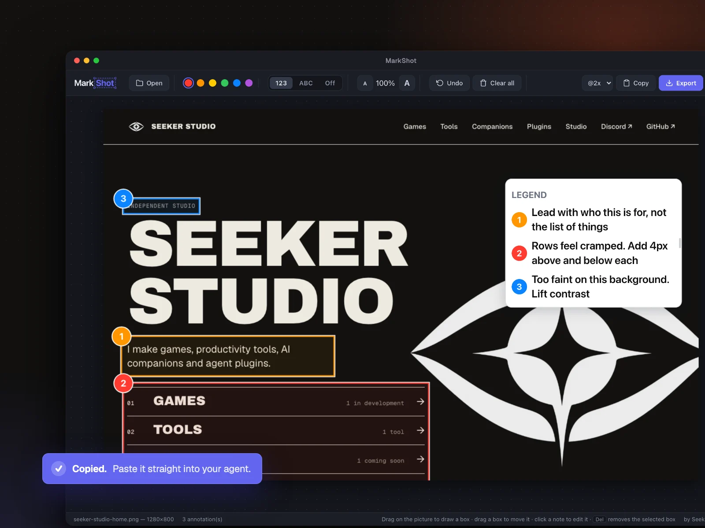
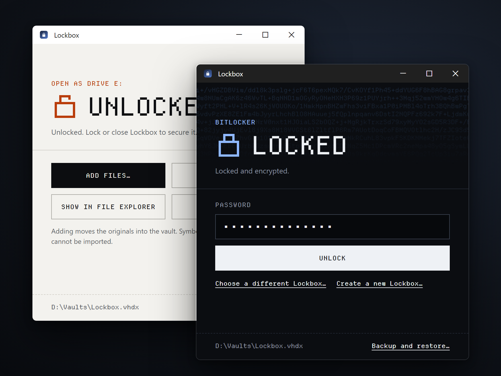
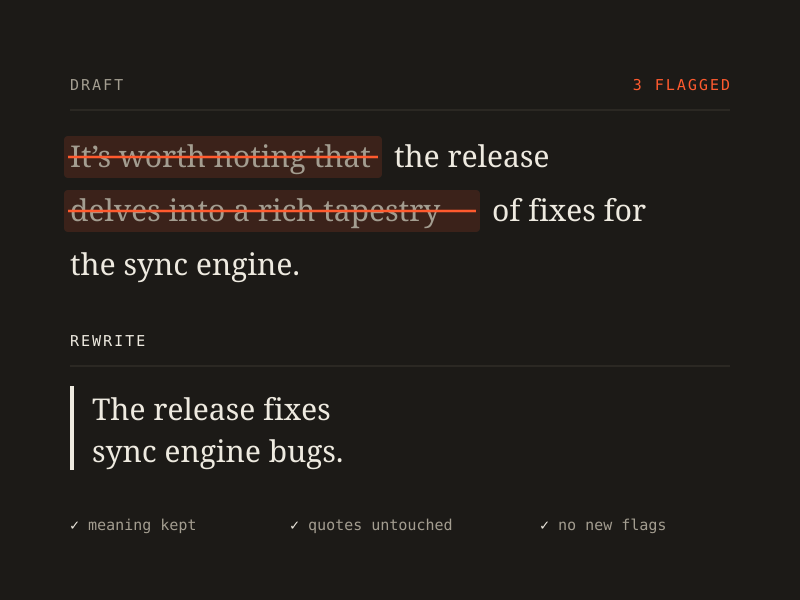
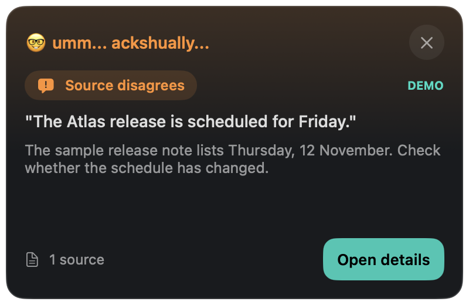
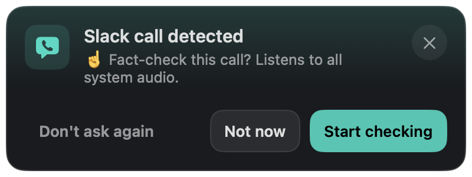
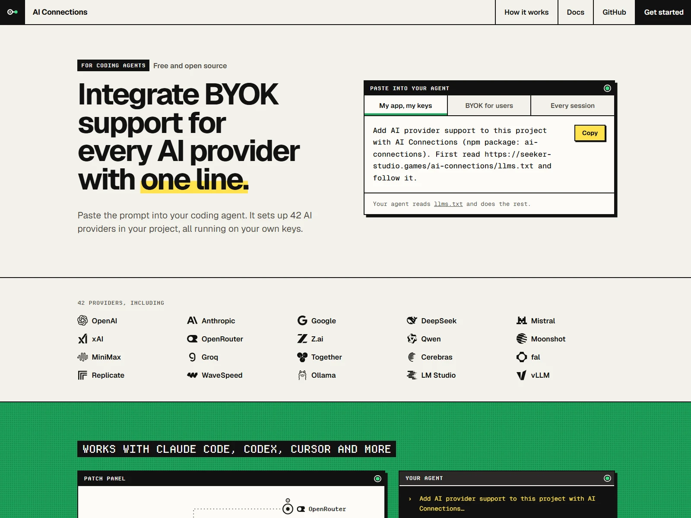
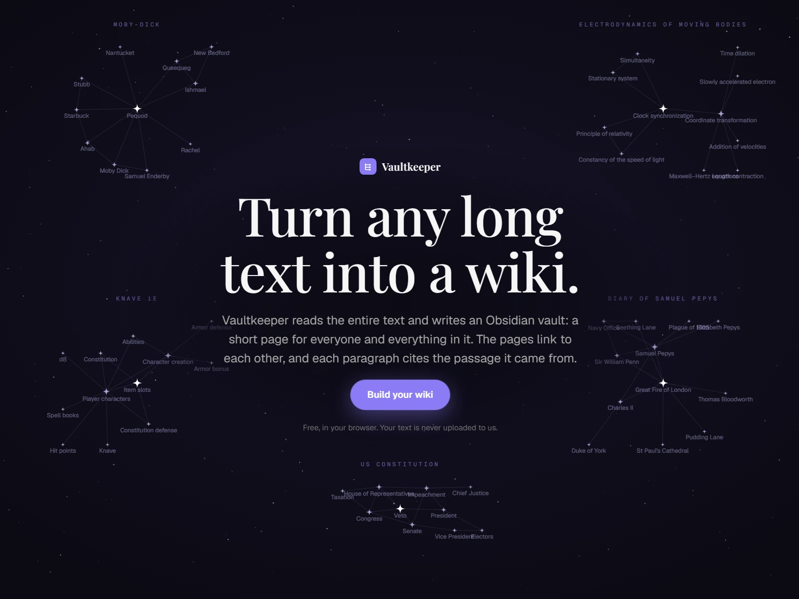
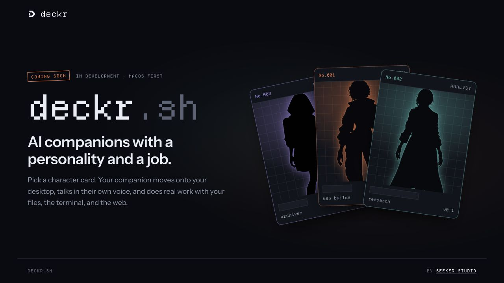

T-01Public prototype

Screenshot feedback
MarkShot
Mark up a screenshot so an AI agent knows exactly what to fix.
Try MarkShotIndependent studio
I make games, productivity tools, AI companions and agent plugins.
Stories you take part in.

Narrative roleplaying
Tabletop play with an AI game master, voiced companions and dice, in worlds adapted from books or original adventures.
Small programs that each do one job.

Screenshot feedback
Mark up a screenshot so an AI agent knows exactly what to fix.
Try MarkShot
Encrypted files
A password-protected vault for private files.

Writing cleanup
Find stock AI phrasing in a draft and rewrite it without changing the meaning.


Live fact checking
A fact-check that pops up during calls and videos, sourced from your notes or the web.
Early prototype, not notarized by Apple. Accuracy hasn't been benchmarked.
Get Ackshually...
Image generation
An AI image studio for your own API key.

Developer library · for coding agents
Integrate BYOK support for every AI provider with one line.
ai-connections · built on the Vercel AI SDK
Knowledge bases
Turn any long text into a linked, cited wiki for Obsidian or an AI.
AI companions that live on your desktop.

Desktop app · macOS first
Collectible AI companions with a personality and a job.
Plugins for DeepSeek Harness: tools for agents, skill and character cards, and changes to the interface.